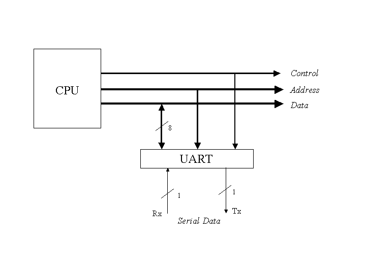
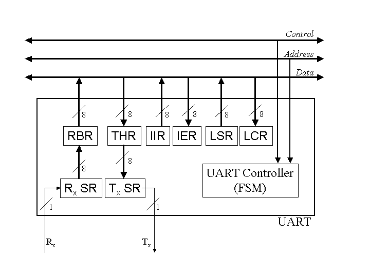
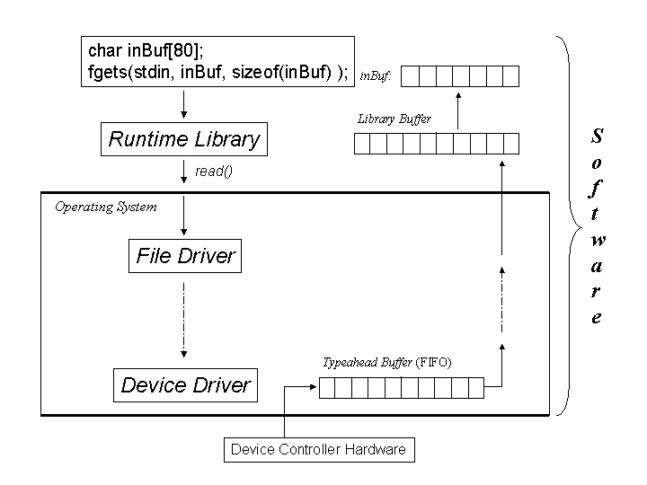

UART stands for "Universal Asynchronous Receiver Transmitter." For our purposes, it is a relatively simple device that illustrates the the nature of device controllers (DCs) in general.
A UART acts as the interface between an I/O bus and a serial device, such as a mouse or modem, which communicate with a computer one bit at a time. On a PC, there are two UARTs that connect to the COM1 and COM2 ports on the back of the computer.
The job of a UART is to accept bytes of data from the CPU 8 bits at a time (in parallel) and to transmit them one bit at a time (serially) to whatever device is plugged into its connector on the back of the computer. At the same time, it receives data bits serially from the device, which it assembles into bytes that the CPU reads in parallel.

Internally, a UART has several different registers that the CPU can read and write. The following table lists just a few of them. The left column lists the addresses the CPU uses to access these registers for a UART being used for COM1 in a standard PC.
| Address | Name | Function |
|---|---|---|
| 0x3F8 | RBR | Read Buffer Register. The CPU reads data bytes from this register. |
| 0x3F8 | THR | Transmitter Holding Register. The CPU writes data bytes to this register. |
| 0x3F9 | IER | Interrupt Enable Register. The CPU writes a byte to this register to tell the UART when to generate interrupts. Individual bits within the byte indicate whether to generate an interrupt when the RBR is full, when the THR is empty, or when an error condition is detected. |
| 0x3FA | IIR | Interrupt Identification Register. The CPU reads this register to find out why the UART generated an interrupt. |
| 0x3FB | LCR | Line Configuration Register. The CPU writes bytes to this register to configure parameters like baud rate (the speed at which bits are sent and received) and parity (error checking) options. |
| 0x3FD | LSR | Line Status Register. The CPU reads from this register to find out whether the RBR is full, whether the THR is empty, or whether an error condition has been detected. |
This table is far from complete, but it is accurate as far as it goes. The registers described here give us enough to work with so we can see how a Device Controller works.
To understand how a UART operates we also need to introduce two additional registers that are not in the table, and which the CPU cannot access directly. These are the shift registers connected to the Rx and Tx wires. The Rx shift register (Rx SR) is an 8 bit register that receives incoming serial data. When 8 data bits have arrived, the Rx SR is transferred in parallel into the 8-bit RBR. While waiting for the CPU to read from the RBR, the Rx SR can start receiving bits from the next input byte on the Rx line. Likewise, the there is a Tx shift register (Tx SR) that gets loaded from the THR in parallel, and then shifts the bits out over the Tx wire one at a time. While the Tx SR is transmitting a byte, the CPU can write another data byte to the THR.

The descriptions of the registers in the table above used phrases like, "the CPU reads ..." and "the CPU writes ". Statements like this means that some software, called a Device Driver executes the CPU's in and out ISA-level instructions. For example, the Intel Architecture instruction inb 0x3F8 would read a byte from the RBR of the COM1 UART into the CPU's "AL" register.
Each Device Controller attached to the I/O Bus has its own Device Driver in the operating system. As the figure below indicates, the Device Driver is the lowest of several layers of software involved in I/O operations. At the top of the figure, a program (this could be a C or C++ program) has set up an array of bytes named inBuf and calls a function to read a string of characters into the array. We'll assume that the string the program reads consists of characters a user types on a keyboard that is connected to the Rx input line of a UART.
The fgets() function is part of the C or C++ Runtime Library that gets linked to all C/C++ programs. The library functions manage their own buffer of data. If there are enough data bytes available in the library buffer, the call to fgets() is just a quick function call that copies the requested string from the library buffer to inBuf, and the user's program spends virtually no time at all making the function call. But if there are not enough bytes in the library buffer to satisfy the call to fgets(), it calls read(), which is an Operating System Call that goes through several layers of software in the OS until finally some code extracts bytes from the Device Driver's "typeahead buffer" shown in the lower part of the figure. When the device driver reads a byte from the RBR, it puts it into the tail of the typeahead buffer FIFO (first-in, first-out queue). This buffer is called a "typeahead" buffer because the user can type characters before any program tries to read them, and they will be kept here until a read() system call consumes them and passes them back up to the library's buffer. But if the typeahead buffer doesn't have a complete string in it when the read() function is executed, the program will be blocked until the user types enough characters for the Device Driver to put into the typeahead buffer for the read() function to complete.

The boundary between the Runtime Library and the Operating System is an important one. The input and output instructions that Device Drivers execute are "privileged" instructions that will cause the CPU to generate a fault (a hardware-generated exception) if code in the library tries to execute them. Switching the CPU from non-privileged to privileged mode is a very time-consuming operation compared to a simple function call, a topic (hopefully) covered in your Operating Systems course. The Runtime Library is designed to minimize the number of system calls a program has to make as much as possible.
The material in the following sections supplements the equivalent material in section 8.3 of the textbook on pages 308 through 313. The idea is that these topics might be easier to understand if they are related to the concepts of Device Controllers, which are missing from the textbook.
Before reading from the RBR, the device driver must read from the LSR to determine if there is a new byte available there yet or not. A simple way to program a device driver it to code an endless loop that looks something like this:
char lsr;
char rbr;
char typeahead[100];
int nextPut = 0;
for ( ;; )
{
lsr = inbyte( 0x3FD );
if ( (lsr & 0x01) != 0 )
{
rbr = inbyte( 0x3F8 );
typehead[ nextPut++ ] = rbr;
}
}
There are several things to say about the above code. The first is that it is written in C/C++, where the size of a char is one byte. (In Java, a char is two bytes.) The second is that it assumes there is a function or macro named inbyte() that takes an I/O address as an argument, and returns a byte that it reads from that address. The third is that the sample code assumes that the bit in the rightmost position of the LSR (0x01) gets turned on by the UART's control logic every time the Rx SR fills up and is transferred to the RBR, and that this bit gets turned off when the CPU reads from the RBR. Fourth, the typeahead array needs to be implemented as a "bounded buffer," which means that all the code for making nextPut wrap around to the beginning and all the logic for producer-consumer synchronization would need to be added in a real Device Driver. Again, that's a topic for your Operating Systems course to cover.
The endless loop in this code is called a "polling loop." The device driver asks the device controller ("polls the device controller") by reading the LSR to find out if there is a new data byte to read, and reads the byte if there is. Whether there is anything to read or not, the code then just goes back and polls the LSR again immediately. This coding technique dedicates all the CPU's fetch-execute cycles to polling and reading the Device Controller, which leaves no time for the CPU to execute anything else. (Including the consumer side of the producer-consumer relationship!) A modified version of this polling technique might actually be appropriate in a situation where a simple CPU is dedicated to processing data from a high-speed source such as a laboratory instrument. But in general, it is too restrictive for general purpose computing.
Instead of constantly polling the Device Controller, the Device Driver can configure the Device Controller to send a special signal to the CPU whenever the LSR changes in an "interesting." way. (Interesting means, for example, when a new byte is loaded into the RBR from the Rx SR but not when the CPU reads from the RBR, even though both events cause the LSR to change.) This signal is called an Interrupt ReQuest (IRQ). An Intel processor has just one IRQ wire going into it, which can be thought of as a separate wire among the control wires of the I/O bus. (A separate device called a Programmable Interrupt Controller handles the management of different IRQs coming from the various Device Controllers in the system.)
Instead of dedicating all the CPU's execution cycles to polling Device Controllers, the operating system can scheule other programs to run while a program is waiting for I/O. The CPU fetch-execute cycle we looked at in Chapter 6 is modified so that the CPU checks the status of the IRQ line just before each instruction fetch. If it is true, the CPU writes the contents of all the registers, including the psr (which contains the condition code bits) into a reserved area of memory, and fetches the next instruction from the code in the device driver that reads the LSR, which by definition will indicate either that the RBR is ready for reading, the THR is ready for writing, or that an error has occurred that requires some sort of recovery action. This part of the Device Driver that gets called by the CPU itself in response to an IRQ is called an interrupt handler or an interrupt service routine (ISR). When the ISR finishes polling and reading or writing the Device Controller registers, it executes a "return from interrupt" instruction, which signals the CPU that it can resume the interrupted program by loading all the registers from the reserved area of memory and fetching the instruction addressed by the pc register.
Managing interrupts from multiple Device Controllers and scheduling multiple programs to use the CPU in the intervals between interrupts are, yet again, topics for your Operating Systems course.
If you look at the polling loop code above and think about what is happening, you can see that each byte of data gets read into the CPU and then written out from the CPU to memory, requiring two bus cycles each. (Because the program uses the lbr variable in memory there are actually two overhead bus cycle that could be eliminated by writing:
typeahead[ nextPut ] = inByte( 0x3F8 );
A good compiler would optimize the first version of the code to eliminate the extra cycles.)
For a low-speed controller like a UART, the overhead of moving data from the Device Controller to the CPU and from the CPU to memory is not worth worrying about. But devices like disk drives can place an unnecessarily heavy load on the system if every byte being read from the drive has to cause an I/O interrupt and two bus cycles to get into a memory buffer. The solution is to design the disk drive's device controller so it can be operated in Direct Memory Access (DMA) mode.
A DMA-capable device controller has registers to which the CPU can write the address of the beginning of a buffer in memory and it's size. After writing the address and size values into these registers, the CPU writes a value to another register in the controller that tells it to start a DMA transfer. The controller then writes the data directly into the memory buffer as it arrives from the disk drive, and only sends one IRQ to the CPU when the entire transfer has completed. The efficiency gained is the elimination of half the bus cycles due to transferring the bytes to the CPU, and the elimination of almost all the interrupt processing. The bus, however must be designed to arbitrate between the CPU and the device controller, since both will be trying to use the bus at the same time. The CPU can be fetching instructions from one part of memory while the disk controller is trying to write data to another part of memory using the same bus, but only one bus transfer can actually occur at a time.
As with all the rest of the material in this web page, extending this description of DMA transfers to writing as well as to reading functions is left as an exercise for the student.(!)